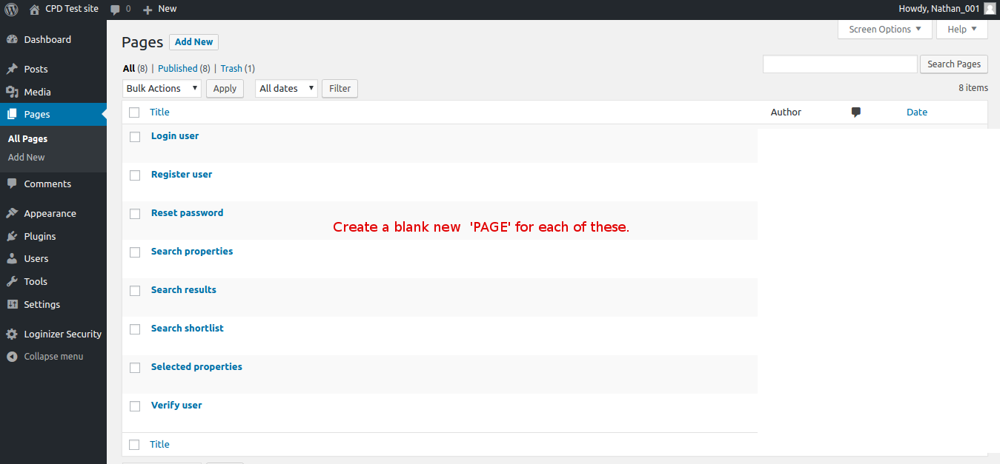

This guide is intended for agents / developers who wish to install the cpd-search plugin to their wordpress site and have a working commercial property search facility of either their own properties (current instructions), full UK wide search or a customised search of specific areas for specific property types. see our API docs for more information on customising the plugin.
To get a working version of the 'cpd'search' plugin on your wordpress site you will need
Follow the instructions below
Two recommended ways to download / install the cpd-search plugin
Download of our wordpress plugin is FREE but in order for the plugin to work you will need a token from cpd which will allow connection to our database.
We have two subscription levels which will let agents display
You will need to register your agency with one of our monthly, quarterly or annual subscription plans. For more details, please contact us with more details of your agency, including number of users.
To request a token please contact us.
Usually your token will be emailed to your contact address.
Go to the wp-admin settings for the cpd-search-plugin (see screenshot below) then copy and paste the cpd-token into place and save. If configured correctly there should be a message like 'server connection successful'
There are a set of .php pages and .js files which need to be present in your wordpress site theme for the plugin to work.
These files are available in the cpd own theme 'simplebasis' which can be downloaded here.
You can either copy the pages into your own theme if you have one or use the 'simple basis' theme as a starting point.
For the plugin to work there needs to be set of blank pages created in wp-admin which correspond to the .php pages and .js files detailed previously. Title for the pages are listed below.

Users can add properties to a 'shortlist' which appears in the 'results' view. This can be added as a widget in the wp-admin area. Your theme will need a widget area to be able to add the shortlist to it.
The cpd-simplebasis theme comes with a search results page which already includes the widget area.
If you are using your own theme you will need to add the corresponding widget area to your themes functions.php file.
For agents marketing other properties than their own current instructions eg the full database search, the users will need to register so a set of email templates will be needed.
Users need to register their contact details to be able to get the full property details. After clicking on 'download shortlist' user will go to the 'register user' page and enter their contact details. The user will be sent an verification email to their registered address which when replied to will send the user to the 'verify-user' wordpress page.
The user will also be sent a copy of the properties details which were added to the shortlist.
The agent will be sent an email detailing the user activity and properties which where added to the 'shortlist' (We also seem to use the term 'register interest'
Currently the email templates are managed by CPD so you will need to contact us when you are ready and we will send you a set which can be customised with the company logo etc.
For the search to display results an agent will first need to have properties in our 'commercial property database'.
Properties can be added through the members area. See full instructions here. Members area is FREE to use for 'commercial property agents'. This allows you to add, update, search and archive properties being marketed by your agency (current instructions) . You will also be able to register any current requirements you may have, which will be made available to subscribing agents that may be able to fulfill them .
Choose what type of properties or what area you want the search to apply. Agents can display results from all properties or just a selected area.
Developers can also see our API documentation to see ways in which agents sites can interface with our Commercial Property Database.
You can send your PDF brochures directly to our Data Entry team by e-mail – dataentry@cpd.co.uk
Log in to the CPD 'members area' where you can add, manage and market properties to other agents. Register for FREE to add your properties now.
Free subscription means that you can log into our database members area and upload your properties which can be seen by other agents. Properties can be edited and status updated / archived at any time. You will get a 'TOKEN' which can be used together with the free cpd-search plugin to display a search of all your own properties which have been added to the database.
Main benefit of the 'paid subscription' is access to the full contents of our database. Enabling agents to be able to provide a full nationwide property search on their website using the 'cpd search plugin' or searching properties via the cpd 'members area'
If using the cpd search plugin for your wordpress site as a FREE subscription user then users who search your website can download PDF copies of your properties details.
For agents who are paid subscribers the same applies but with the addition that a search of the entire database can be shown. When a user is interested in a property they will be asked for basic contact details eg email / phone. The agent will have the users contact and also the contact of the agent who is marketing the property.
NO. Search results will not show full details of properties which are not agents own current instructions. The user will get an email with brief details. The agent will be able to contact other agents directly regarding any properties which may match their requirements.
If you already have a wordpress site setup then a basic search can be working in under an hour depending on your experience with wordpress.
Once the search is working and hooked up to our database you will most likely want to update the look and feel of the search form and results view to match your existing website. Depending on your web design experience you may want to get help with this part. CPD can offer web design services to integrate the plugin into and existing 'wordpress' website or build a new website including the search plugin. If you need help with the plugin install or any other issues please contact us.
Yes the form can be customised to show different criteria and made to reflect the kind of properties your agency specialises in and would like to market.
Please report it to us at support@cpd.co.uk. It helps if you can describe the issue and the steps for us to try yto reproduce the issue.